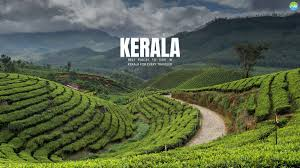

"God's Own Country" - Explore Nature, Culture & Traditions
Kerala is one of the most popular tourist destinations in India. It is famous for lush green landscapes, serene backwaters, hill stations, wildlife, spice plantations and beautiful beaches. The state offers a peaceful environment, rich heritage, classical dances like Kathakali and Mohiniyattam, and traditional food that attracts tourists from all over the world.
